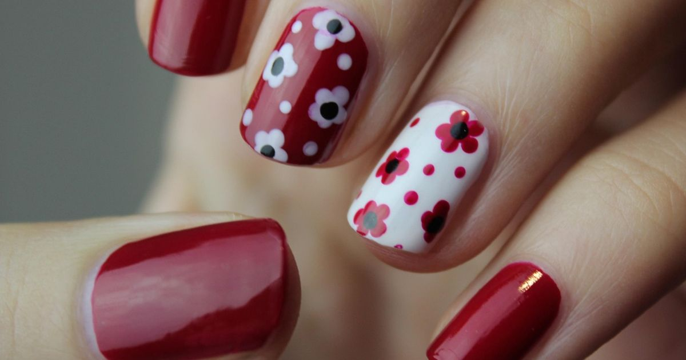

How to Make a Website for a Hair Salon – Step by Step Guide

Key takeaways
- Pick a salon‑specific website builder that offers free plans
- Add online booking and gallery features to showcase work
- Optimize for local SEO to attract nearby clients
- Back up your site and data using simple cloud tools
Creating a website for a hair salon doesn’t have to be complicated. Start by choosing a niche‑focused builder, then add essential pages, booking tools, and SEO basics.
In this guide you’ll get a clear roadmap, free resources, and real‑world tips from a developer who built POS systems for service‑based shops.
Choose the Right Website Builder for Hair Salons
Choose the Right Website Builder for Hair Salons
Selecting a builder that matches the unique needs of a hair salon saves time and money. Look for platforms that provide ready‑made salon templates, built‑in or easy‑to‑add booking systems, and a free tier that lets you test the waters before committing.
Key criteria to evaluate
- Ease of use: Drag‑and‑drop editors or simple theme customisation without code.
- Mobile‑responsive design: Templates must adapt to phones and tablets, as most clients browse on mobile.
- SEO tools: Built‑in meta tags, schema for local businesses, and sitemap generation.
- Booking integration: Direct calendar sync, payment handling, and automated reminders.
- Cost: Free plan availability and typical upgrade pricing (USD $10‑$30 / month).
Builder comparison
| Builder | Salon templates | Booking integration | Free plan | Typical upgrade cost (USD/mo) |
|---|---|---|---|---|
| Wix | Yes, 10+ salon‑focused designs | Wix Bookings (native) or third‑party apps | Yes (limited storage, Wix ads) | $14‑$27 |
| Squarespace | Yes, stylish modern themes | Acuity Scheduling (integrated) – extra fee | No (14‑day trial only) | $16‑$30 |
| WordPress | Theme marketplace – many salon‑specific options | Plugins like Bookly, Amelia | Yes (self‑hosted, only hosting cost) | $5‑$25 (plugin licenses) |
| Salonify | Built exclusively for salons | Native booking, POS, inventory | Yes (basic features, branding) | $12‑$20 |
**Practical steps**
- Sign up for a free tier of each builder you are considering.
- Import a salon template and replace placeholder images with your own brand assets.
- Add a booking widget; test the flow from appointment selection to payment.
- Run the built‑in SEO checklist: set page titles, meta descriptions, and enable local business schema.
- Preview on a smartphone; ensure buttons are tappable and text remains legible.
For most small salons, Wix offers the quickest start with a free plan and native booking, while WordPress provides the most flexibility if you already have hosting and are comfortable installing plugins. Squarespace shines for design‑focused brands willing to pay a modest monthly fee, and Salonify is worth a look if you need an all‑in‑one solution that also handles POS and inventory.
Set Up Core Pages and Content
Set Up Core Pages and Content
Every hair‑salon website needs a clear, logical structure that guides visitors from first glance to booking. The six core pages—Home, Services, About, Gallery, Contact, and Booking—form the backbone of that journey.
Essential Pages
- Home: Capture attention with a headline that includes the main keyword (e.g., “Professional Hair Salon in [City]”). Add a brief value proposition, a hero image of the salon, and a primary call‑to‑action (CTA) button such as “Book an Appointment”. Keep the copy under 150 words.
- Services: List each service as a separate block with a short description, price range (e.g., “Women’s Cut – $30‑$45”), and an optional “Add to Booking” button. Use bullet points for quick scanning.
- About: Share the salon’s story, qualifications, and unique selling points. Include a photo of the team and a trust badge (e.g., “Certified Stylists”). End with a secondary CTA like “Meet Our Stylists”.
- Gallery: Showcase high‑resolution before‑and‑after shots. Organize images in a grid and add alt text that describes the style (e.g., “Layered bob haircut”). Limit each image file to under 200 KB for fast loading.
- Contact: Provide phone, email, address, and a simple contact form. Embed a Google Map for directions. Place a bold CTA “Call Now” that links to the phone number on mobile devices.
- Booking: Integrate the online booking widget (or a third‑party tool). Include clear instructions, a calendar view, and a confirmation message that reinforces the next steps.
Copy Tips
- Use active verbs and local keywords (“Get a fresh cut in downtown [City]”).
- Keep sentences under 20 words for readability.
- Highlight benefits before features (e.g., “Save time with online booking”).
Image Selection
- Choose images that reflect the salon’s style—modern, classic, or boutique.
- Use natural lighting and avoid stock photos that look generic.
- Compress images with tools like TinyPNG; aim for 1–2 MB total for the page.
CTA Placement
Every core page should have at least one CTA above the fold. Use contrasting button colors, concise text (“Book Now”, “View Services”), and ensure the button links directly to the Booking page or contact form. Consistency in CTA style improves conversion rates without needing complex analytics.
Integrate Online Booking
Integrate Online Booking
Online booking turns a static salon site into a revenue engine. Below I walk you through three popular widgets—Acuity Scheduling, Square Appointments, and Wix Bookings—so you can pick the one that matches your budget and technical comfort.
Why a widget? It handles time‑zone conversion, double‑booking protection, and automatic reminders without you writing any code. Most providers charge a monthly fee (USD 15‑30) and offer a free trial, so you can test before you commit.
- Acuity Scheduling
- Sign up at acuityscheduling.com and create a “Client Intake Form” with services (e.g., haircut, color, styling).
- Under Integrations → Embed copy the iframe code snippet.
- Paste the snippet into your website where you want the calendar to appear. Example: <iframe src="https://app.acuityscheduling.com/schedule.php?owner=123456" width="100%" height="800" frameborder="0" scrolling="no"></iframe>
- Test on desktop and mobile; adjust height if the widget cuts off.
- Square Appointments
- Log in to your Square Dashboard, enable Appointments, and set up services, staff, and business hours.
- Go to Online Booking → Share Link and copy the provided URL.
- On your site, add a simple button: <a href="https://square.site/book/YOUR_ID" target="_blank" class="btn">Book Online with Square</a> The link opens Square’s responsive booking page in a new tab.
- Square’s pricing starts at USD 0 for a free plan (limited to one staff member) and USD 50/month for the full suite.
- Wix Bookings
- If you built your site on Wix, add the Wix Bookings app from the Wix App Market.
- Configure services, staff, and buffer times directly in the Wix editor.
- The app automatically inserts a responsive booking block—no code needed.
- Wix charges USD 14‑25/month for the Business & eCommerce plan that includes bookings.
Quick checklist before you go live:
- Set service durations and buffer times to avoid overlap.
- Enable email/SMS reminders (most widgets include this for free).
- Test the booking flow on a phone and a slow connection.
- Make sure the confirmation page displays your salon’s contact details.
Built a full POS system for retail shops and restaurants in Saudi Arabia, the UAE and Pakistan, sold as one full version (no feature tiers).
Add a Portfolio Gallery
Add a Portfolio Gallery
A visual portfolio is the single most persuasive element on a hair‑salon website. Prospective clients decide within seconds whether they trust your styling skills, so a fast‑loading, SEO‑friendly gallery is essential.
Step‑by‑step guide
- Select a lightweight gallery plugin or built‑in block. For most website builders, a simple grid block with lazy‑load support costs $0‑$30 per month. If you use WordPress, plugins like Envira Gallery or FooGallery start at $29/year.
- Prepare images. Resize each photo to a maximum width of 1200 px; compress to 60‑70 % quality using tools such as TinyPNG (free) or ShortPixel ($5‑$10/mo for bulk). Keep the original high‑resolution files offline for future edits.
- Apply descriptive alt text. Write concise, keyword‑rich alt attributes, e.g., alt="women’s haircut – layered bob, before and after". This improves accessibility and helps Google rank for how to make a website for a hair salon related queries.
- Enable lazy loading. Most modern builders add the loading="lazy" attribute automatically. Verify by inspecting the image tag in the browser’s developer tools. Lazy loading delays off‑screen images until the user scrolls, cutting initial page weight by 30‑50 %.
- Organize by service. Create separate sections for “Haircuts,” “Color,” “Styling,” and “Special Events.” Use a <ul> list of categories above the grid for easy navigation.
- Show before/after pairs. Place two images side‑by‑side within a single gallery item. Label each with Before and After in the caption to highlight transformation.
Checklist before publishing
- All images compressed and resized.
- Alt text includes primary service keywords.
- Lazy loading enabled and tested on mobile.
- Gallery loads under 2 seconds on a 3G connection (use Google PageSpeed Insights).
- Responsive layout adjusts to 1‑column on phones.
Typical cost for a professional‑grade gallery ranges from free (built‑in blocks) to about $30 per month for premium plugins. Investing in a fast, SEO‑optimized portfolio not only showcases your work but also improves search rankings for the main keyword, helping more local clients discover your salon online.
Optimize for Local SEO
Optimize for Local SEO
When a hair‑salon website shows up in the “near me” box, appointments start flowing. Below is my checklist, built from years of wiring POS systems that must work offline and survive flaky internet – the same reliability you need for local search.
1. Claim and complete Google My Business (now Google Business Profile)
- Sign in with a dedicated Gmail account (I often see owners back‑up their data to Gmail and WhatsApp, so keep the login simple).
- Enter the exact business name, address, and phone – the NAP.
- Add business hours, services (e.g., haircut, coloring), and high‑resolution photos of the salon interior.
- Verify via postcard or phone; the verification code is the only thing you’ll need to keep safe.
2. Keep NAP consistency everywhere
- Website footer, contact page, and schema markup must match the Google profile exactly.
- Update the same details on local directories (Yelp, Bing Places, regional classifieds).
- Use a plain‑text format like “123 Main St, Riyadh 11564, Saudi Arabia” – no extra punctuation.
3. Target local keywords
In page titles, headings, and meta descriptions sprinkle phrases such as “hair salon in Riyadh”, “best haircut near Al Olaya”, or “women’s styling in Jeddah”. Keep the keyword density under 2% to avoid sounding spammy.
4. Add schema markup for services
Insert JSON‑LD in the <head> of each service page:
{ "@context": "https://schema.org", "@type": "HairSalon", "name": "Your Salon Name", "address": { "@type": "PostalAddress", "streetAddress": "123 Main St", "addressLocality": "Riyadh", "postalCode": "11564", "addressCountry": "SA" }, "telephone": "+966500000000", "priceRange": "$$", "servesCuisine": [], "url": "https://yoursalon.com", "hasOfferCatalog": { "@type": "OfferCatalog", "name": "Hair Services", "itemListElement": [ {"@type": "Offer", "name": "Women’s haircut", "price": "30"}, {"@type": "Offer", "name": "Coloring", "price": "45"} ] } }This tells Google exactly what you offer and improves local pack visibility.
5. Collect and showcase reviews
- Ask happy clients to leave a 5‑star rating on Google after their appointment; a simple QR code on the receipt works well.
- Display the latest three reviews on the homepage using a lightweight widget (costs around $20–$40 if you buy a ready‑made script).
- Respond to every review – even the negative ones – within 24 hours to show you care.
Note: The author has built a full POS system for retail shops and restaurants in Saudi Arabia, the UAE and Pakistan that prints bilingual invoices and keeps selling even when the license server is down.
Ensure Fast Loading and Mobile Friendliness
Ensure Fast Loading and Mobile Friendliness
Speed and mobile usability are non‑negotiable for a hair‑salon website. Customers often browse on phones while waiting for an appointment, and a slow or clunky site drives them straight to the competition. Follow this checklist to keep load times low and the design responsive.
- Compress all images. Use a tool such as TinyPNG or ImageOptim to shrink JPEG/PNG files to 70‑80 % of their original size without visible loss. Aim for a maximum width of 1,200 px for hero images and 800 px for gallery thumbnails. Expect to pay $0‑$15 per month for an automated compression plugin (e.g., ShortPixel, Smush).
- Leverage caching. Install a caching plugin like WP Rocket (≈ $49 / year) or the free W3 Total Cache. Configure page caching, browser caching, and minification of CSS/JS. This reduces server round‑trips and serves static files to repeat visitors.
- Implement responsive design. Choose a builder template that uses a fluid grid and media queries. Verify that key elements—navigation, booking button, contact info—scale correctly at breakpoints 320 px, 480 px, 768 px, and 1024 px. Use the browser’s DevTools device toolbar to spot overflow or hidden text.
- Test with Google PageSpeed Insights. Run the URL after each major change. Target a score of 85 + on mobile and 90 + on desktop. Note the specific recommendations (e.g., “Eliminate render‑blocking resources”) and address them promptly.
Step‑by‑step workflow
- Upload original photos to a temporary folder.
- Batch‑compress them with your chosen tool; rename files to include descriptive keywords (e.g., balayage‑layered‑cut.jpg).
- Replace existing images on the site with the compressed versions.
- Activate and configure a caching plugin: enable page cache, set expiration to 7 days, and turn on CSS/JS minification.
- Open the site in Chrome DevTools, toggle the device toolbar, and scroll through each page. Fix any elements that break the layout.
- Run PageSpeed Insights; implement the top three suggestions, then re‑run until the target scores are met.
Typical cost breakdown for a small salon:
| Item | Approx. Cost (USD) |
|---|---|
| Image compression plugin (annual) | $0‑$15 |
| Caching plugin (annual) | $0‑$49 |
| Developer time for setup (if outsourced) | $100‑$250 |
By keeping files lightweight, caching aggressively, and confirming mobile responsiveness, the site will load in under three seconds on most connections—fast enough to keep prospective clients browsing and booking.
Backup and Security Basics
Backup and Security Basics
Backing up a salon website protects against data loss, hacking, and accidental deletion. A simple, cost‑effective approach is to combine cloud storage with the platform’s built‑in backup options.
- Google Drive or Dropbox – Export the site’s database and media folder every two weeks. Store the ZIP file in a dedicated folder and enable two‑factor authentication. Approximate cost: $0–$10/month depending on storage needed.
- Automatic Builder Backups – Most site builders (e.g., Wix, Squarespace, WordPress.com) offer daily or weekly snapshots. Verify that the backup includes custom code, plugins, and media. Cost: $0–$30/month for premium plans.
Just as a POS system keeps transaction logs in Gmail and WhatsApp for quick reference, a website should have redundant copies. Set up a dual‑layer backup strategy:
- Export to Google Drive/Dropbox.
- Enable the builder’s automatic backup.
- Store one copy on an external SSD or USB drive for offline safety.
Schedule backups during low‑traffic hours to avoid performance impact. Test restores quarterly by downloading a backup and uploading it to a staging environment. If the restore fails, adjust the backup frequency or method.
Security goes hand‑in‑hand with backup. Use a reputable SSL certificate (often included for free with builders) and keep all plugins/themes updated. Enable a web application firewall (WAF) if the platform allows. Approximate cost for a basic WAF: $5–$15/month.
By combining cloud storage, automatic backups, and offline copies, a salon owner can maintain data integrity and quickly recover from unforeseen incidents.
Launch, Test, and Promote
Launch, Test, and Promote
Before opening the site to the world, run a comprehensive pre‑launch test to catch bugs and usability issues. A simple checklist keeps the process organized.
- Validate all links and form submissions.
- Check responsiveness on iPhone, Android, and desktop.
- Test page load times; aim for 3 seconds on mobile.
- Verify SEO tags (title, meta description, alt text).
- Confirm analytics and tracking codes are firing.
After the checklist, launch a soft launch to a limited audience—existing clients, staff, and local partners. Offer a small incentive, such as a 10% discount on the next service, to encourage early feedback. Use the soft launch to:
- Collect user behavior data via heatmaps (e.g., Hotjar free tier).
- Gather testimonials and screenshots of booking flow.
- Identify any confusing navigation or broken images.
Once the site performs smoothly, start a targeted promotion campaign. Social media is the most cost‑effective channel for local businesses. Allocate a monthly budget of $200–$400 for boosted posts on Facebook and Instagram, focusing on the salon’s geographic radius (5–10 mile radius). Create carousel posts that showcase before/after images, highlight the online booking button, and include a clear call to action.
Simultaneously, set up an email capture form on the homepage and booking confirmation page. Offer a free hair care guide in exchange for an email address. Use a basic email marketing service—Mailchimp or ConvertKit—starting at $10–$20/month. Automate a welcome series: welcome email, booking reminder, and a newsletter invitation. Maintain a monthly newsletter cadence (once a month) to keep clients informed about promotions, new styles, and salon news.
Track key metrics: click‑through rate to booking, conversion rate from email list, and social media engagement. Adjust ad spend and content based on which channels drive the most appointments. By combining a rigorous test phase, a controlled soft launch, and a focused promotion strategy, the salon’s website will attract, convert, and retain clients efficiently.
Frequently asked questions
Do I need a separate domain for my hair salon website?
A custom domain looks professional and improves SEO. Most builders let you connect a domain for a low annual fee, and many include a free subdomain during the trial.
Can I accept payments directly on my salon website?
Yes. Integrate payment gateways like Stripe or Square. Many builders have built‑in e‑commerce blocks that let clients pay for appointments or product sales.
How often should I update my salon website?
Refresh your gallery with new styles monthly, update service prices quarterly, and add blog posts or tips to keep SEO fresh.
Is it safe to store client data on my website?
Use SSL (HTTPS) which most builders provide automatically, and limit data collection to essential fields. Back up data regularly as you would with POS records.
What’s the cheapest way to get a professional‑looking salon site?
Start with a free plan on Wix or WordPress.com, use a free salon template, and upgrade only for a custom domain and premium booking plugin when needed.
Need a POS system, website or app for your business?
I build affordable custom POS software, business websites and mobile apps for shops and restaurants worldwide.
Get a free quote